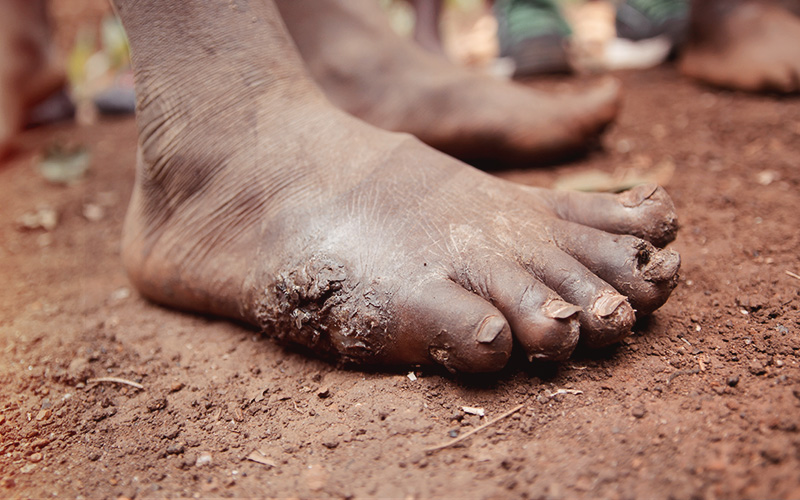
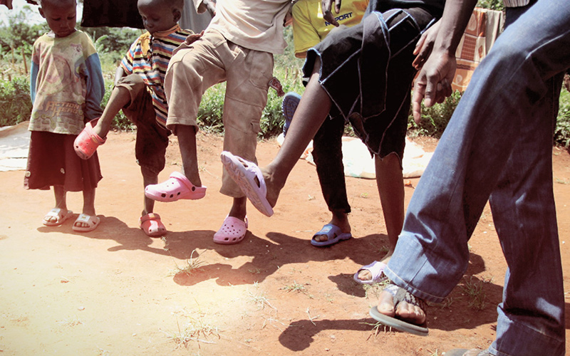
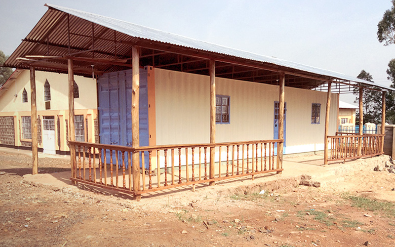

In many countries of East Africa, millions of feet are infected with a bug called jiggers, this bug burrows under the skin and toenails laying eggs and leaving painful soars. Some have even died from being overly affected by this bug.

Throughout the world millions of quality shoes are thrown away every year!
But your shoes can be reused in providing protection for those who are suffering from the infection of jiggers.

More than providing shoes, the containers that are used to transport our shoes will be turned into a container school providing education for children in Africa.